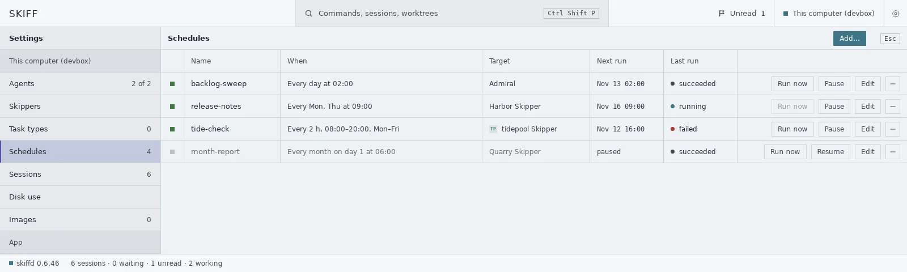
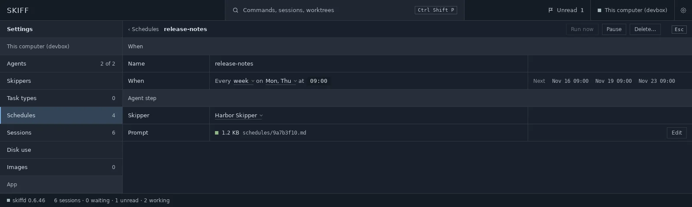
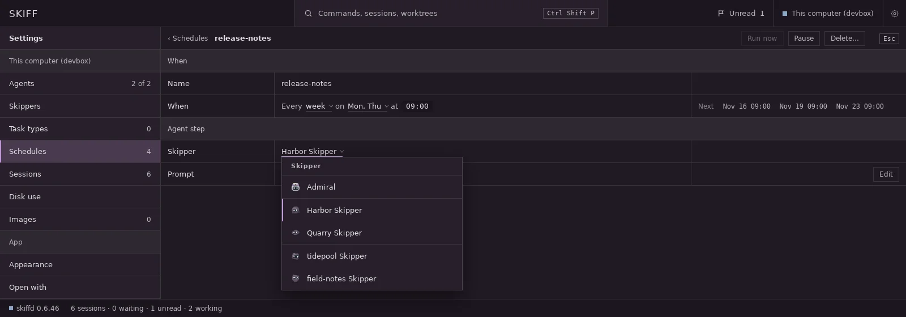
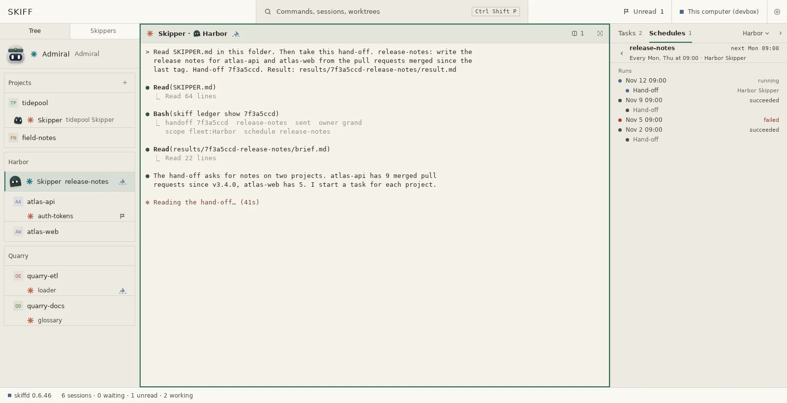

Schedules
A schedule sends a prompt to a Skipper at set times. The Skipper does the work or hands it on. skiffd starts each run, also while the app is closed. Each run is a row in the ledger.
What a schedule is
A schedule has a name, a time (When), a Skipper and a prompt.
- When is every day, weekdays, every week, every month, an interval, or a custom cron line. Times are in the local time of the computer that runs the schedule.
- The run goes to Admiral, to a fleet Skipper or to a project Skipper, as a hand-off. When the Skipper does not run, Skiff starts it first.
- The prompt is a Markdown file: schedules/<uid>.md in the Skiff agent's folder, next to types/. Skiff reads the file at each run, so a change counts from the next run. A first line # <name> is the file's heading. It is not part of the prompt.
- A schedule belongs to the computer that runs it. With the app on a Host, the Host's skiffd runs the Host's schedules.
Settings › Schedules
- Open Settings › Schedules. It is a page of the Host. Each row shows the schedule's state, name, When, target, next run and last run.
- Click Add… to open the edit page for a new schedule. A new schedule goes to Admiral.
- Click Run now to start a run now. The button is off while a run is open.
- Click Pause to stop the runs. Resume starts them again from the next time.
- Click Edit to open the edit page. Click − to delete the schedule. Skiff asks first. The runs stay in the ledger, and so does the prompt file.

Edit a schedule
The edit page has two bands. When holds the name and the When sentence. Agent step holds the Skipper and the prompt file. Each field saves when you leave it. A new schedule saves when its name and its When are valid.
- Type the name in the Name row.
- The When row is a sentence, such as Every week on Mon, Thu at 09:00. Each value with a faint underline is a picker. Click it to open its menu. The first picker sets the rest of the sentence. The end column shows the next 3 runs.
- Type the time as HH:MM. A bad time gets a red underline and an error line in the end column.
- Click the Skipper row to pick the Skipper that takes the run.
- The Prompt row shows the prompt file: a square, its size or none, and the file name. Click Edit to open the file as Settings › Open with › Text files says. When the file does not exist, Skiff makes it with the # <name> line. A new schedule has no file until it saves.
- Click Run now to save the field you are in, start the run and go back to the list. When the run cannot start, the page stays open and shows the error.

When
| Every day | Every day at 01:30 |
| Weekdays | Weekdays at 08:00 |
| Every week | Every Mon, Thu at 09:00 |
| Every month | Every month on day 1 at 06:00. The day is 1 to 28, so every month has that day. |
| An interval | Every 30 min, 09:00–18:00, Mon–Fri. The intervals are 5, 10, 15, 20 and 30 minutes, and 1, 2, 3, 4, 6, 8 and 12 hours. An interval runs all day, or between two whole hours. No run starts at the end hour. |
| Custom | Any 5-field cron line, such as 0 9 1,15 * *, and also @hourly, @daily, @weekly and @monthly. The page shows the cron line as a text field. |
The Skipper picker
The picker lists Admiral, then each fleet Skipper, then the Skipper of each project that is in no fleet, in the order of the tree. Each item shows the Skipper's face. The list has every Skipper, also those that do not run. A project in a fleet is not in the list, because its fleet's Skipper takes its work.

When a fleet Skipper or a project Skipper does not run, Skiff starts it, and its first message and the hand-off go in one turn. A run for a fleet Skipper fails, with the reason, when a project Skipper of that fleet runs. A run for a project Skipper goes to its fleet's Skipper when that Skipper runs.
Runs
- skiffd checks for due schedules every 30 seconds, also while the app is closed.
- The run is a task row in the ledger, with the schedule's name as its title. The hand-off to the Skipper is a row under the run. The run closes with a result.
- A schedule has at most one open run. When a run is still pending or working at the next time, Skiff skips that time and counts the skip.
- When the Skipper's pane is working or waits for you, the run stays pending. Skiff sends it again every 30 seconds until the pane is idle.
- When the computer sleeps, or skiffd does not run, at a run's time, that run does not happen. Skiff does not run it later. The schedule waits for its next time.
- When the project, the fleet or the pane no longer exists, the run fails with that reason. The schedule stays active.
The Schedules tab in the Ledger
- The Ledger panel has two tabs: Tasks and Schedules. Each tab shows its count. The project filter applies to both tabs.
- The Schedules tab shows each schedule in two lines. The first line has a dot for the last run, the name, the next run and the last outcome. The second line has the When words and the Skipper, such as Harbor Skipper.
- The dot is grey for succeeded, blue for running, red for failed, and hollow for no run yet or skipped. A paused schedule shows dim, with paused in place of the next run.
- Click a schedule, or press Enter, to open its runs, newest first. Click a run to open its result. Click a hand-off to open the Skipper's pane while the hand-off is open, and its result after that. ← or Esc goes back to the list.

The tab changes nothing. To add or change a schedule from a shell, use skiff schedule. The Schedules wiki page lists its commands.